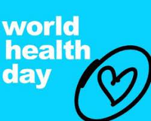
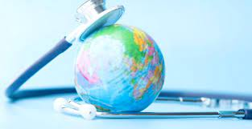
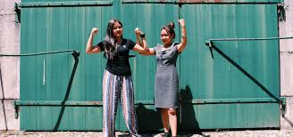
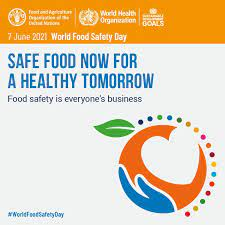
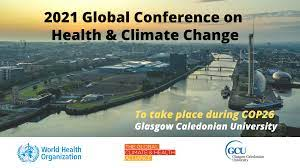

Săptămânal, au loc antrenamente pentru cei care doresc să se pregatească din timp pentru probele de maraton și semimaraton de la Wizz Air Cluj-Napoca Marathon din data de 15 aprilie 2021. Participă cu precădere cei care au fost selectați în programul special de antrenamente Primul Maraton sau Semimaraton.
În fiecare duminică, oricine poate participa la aceste antrenamente.

Ziua Mondiala a Sanatatii 2021
De Ziua Mondială a Sănătății, 7 aprilie 2021, vă vom invita să vă alăturați unei noi campanii de construire a unei lumi mai corecte și mai sănătoase.te noua...

Webinar - Un apel urgent pentru a lucra împreună pentru a combate inechitățile în materie de sănătate
Ziua Mondială a Sănătății 2021 va marca echitatea în sănătate și va fi punctul de plecare pentru o campanie de echitate pe tot parcursul unui an care vizează reunirea oamenilor pentru a construi o lume mai corectă și mai sănătoasă. COVID-19 a luminat și a mărit inechitățile de sănătate.

Global Youth Summit 2021 │ 23-25 April
The Global Youth Summit is a unique virtual event designed with young people, for young people. Over three-days, the Summit will convene young people from all over the world and key stakeholders from UN agencies, national governments and corporate partners to discuss the needs of young people in a post-COVID-19 world.

Ziua mondială a siguranței alimentare 2021
Ziua Mondială a Siguranței Alimentelor (WFSD) sărbătorită la 7 iunie 2021 își propune să atragă atenția și să inspire acțiuni pentru a ajuta la prevenirea, detectarea și gestionarea riscurilor alimentare, contribuind la securitatea alimentară, sănătatea umană, prosperitatea economică, agricultură, acces pe piață, turism și dezvoltare durabilă.

Conferința globală 2021 privind sănătatea și schimbările climatice
Conferința globală din 2021 privind sănătatea și schimbările climatice, cu un accent special pe justiția climatică și recuperarea sănătoasă și ecologică de la COVID-19, va avea loc la marginea conferinței ONU privind schimbările climatice COP26. Scopul conferinței este de a face apel la guverne, companii, instituții și actori financiari pentru a stimula o recuperare ecologică, sănătoasă și rezistentă din COVID-19.